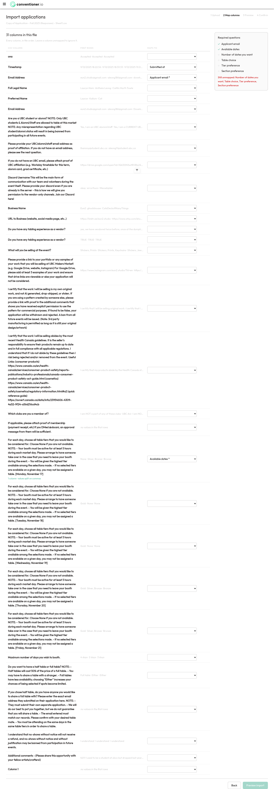
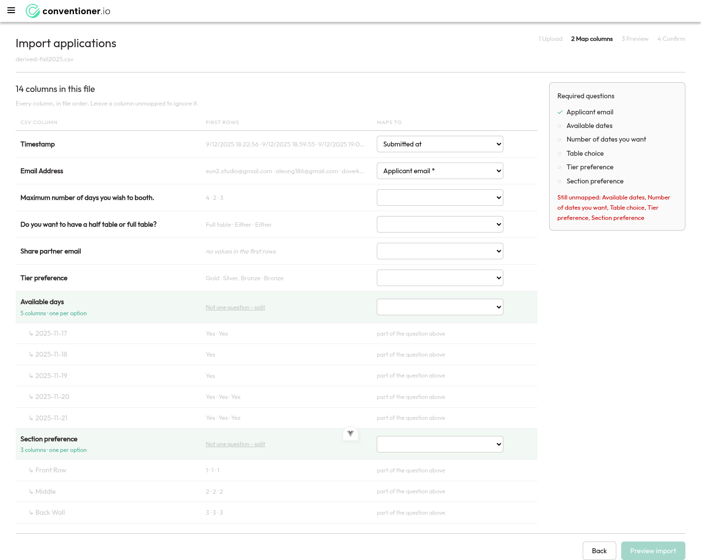
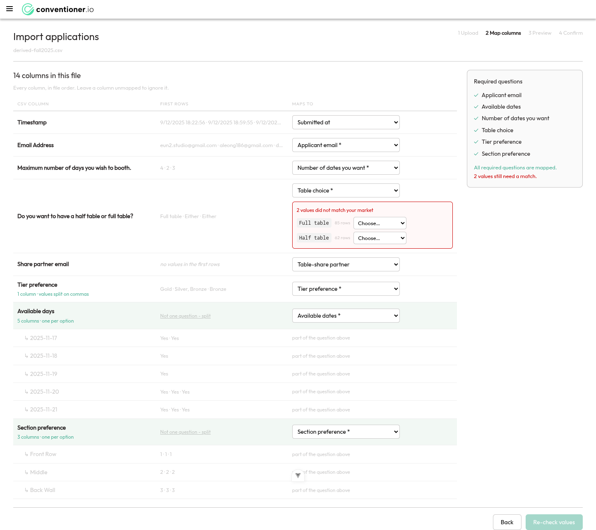
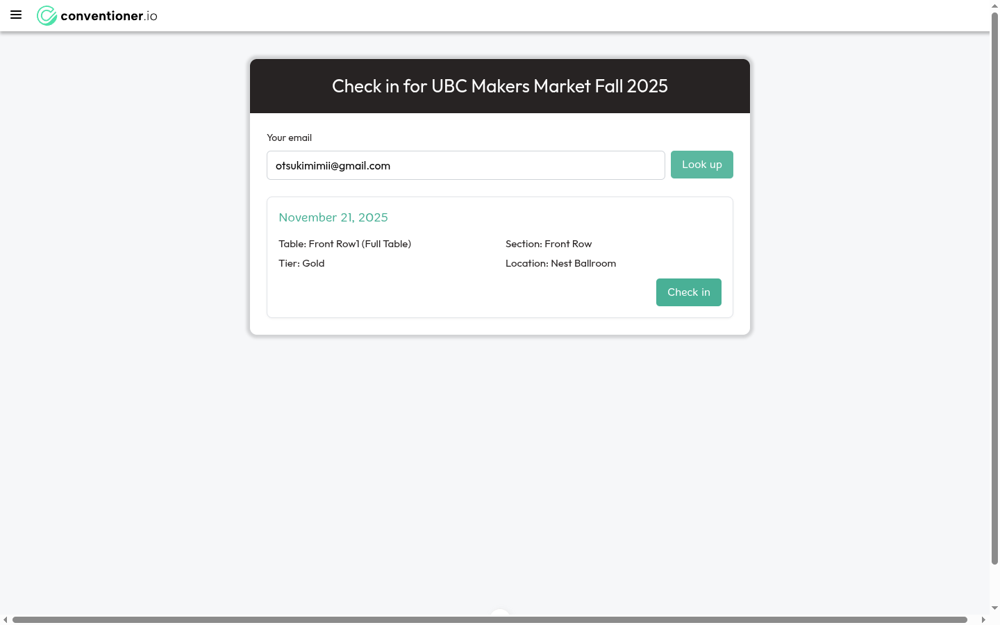
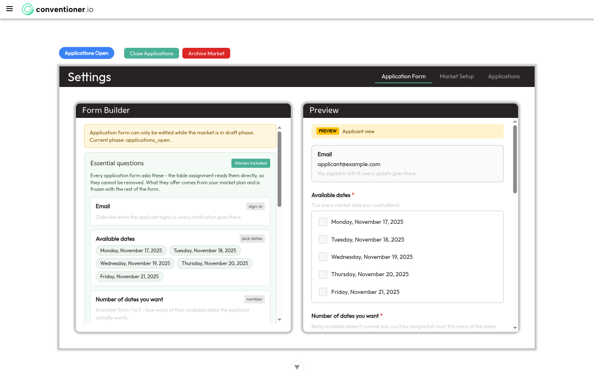
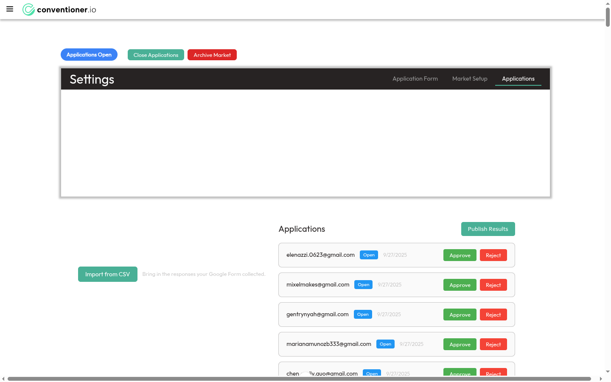
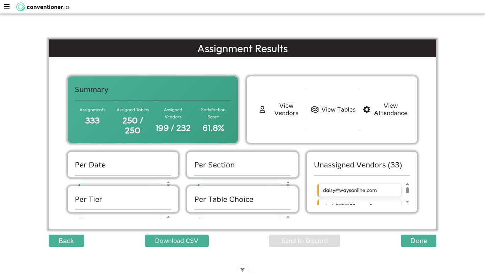
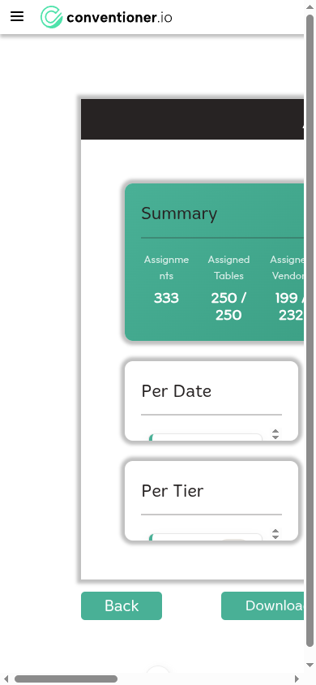
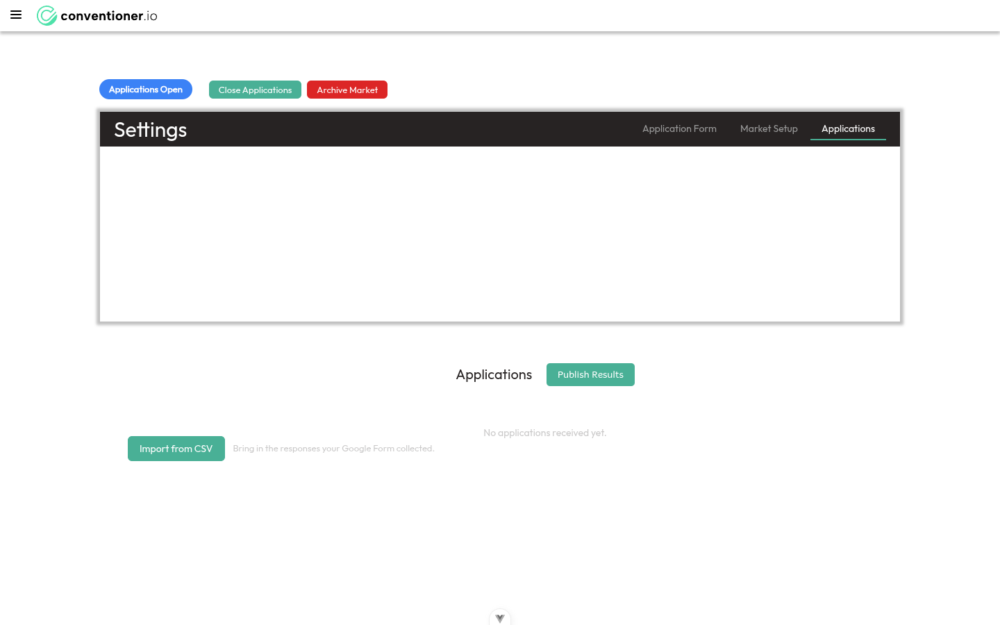
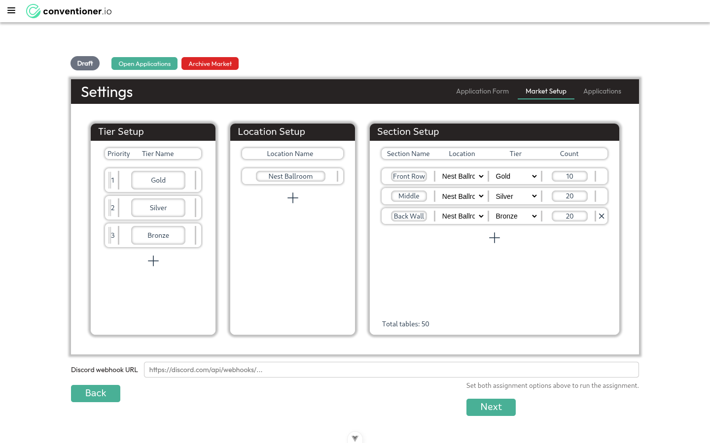

I walked the whole organizer journey in a browser — sign up, plan a market, import vendors, review, assign, publish, check in — using the 232-row UBC Makers Market Fall 2025 response sheet. The pipeline works. The file doesn't get through it.
The machine is sound. Once data is in the shape the product expects, everything downstream works and works well: the solver placed 199 of 232 vendors across 333 assignments and filled all 250 tables, the phase machine held, publishing landed on a live check-in page, and a vendor looked themselves up and checked in. That is a real product doing real work.
The file you gave me cannot be imported. Three independent blockers stop it at the mapping step, and the “Preview import” button is permanently disabled. One is a one-line bug; two are modelling gaps between what a Google Form asks and what the market plan requires.
Two defects would produce wrong answers even after it imports. The “earliest application first” priority rule is a silent no-op on any CSV-imported market, and the fallback ordering compares timestamps as raw text. Both were verified against the live build, not inferred.
Two security holes need attention before anything is deployed. Any signed-up user can read and modify every other organization's markets and applicant PII; and any unauthenticated caller can delete any verified account. Both proven by request, both one-line causes.

Google Forms exports a checkbox grid as one column per option, with the option in trailing brackets: Which days? [Monday, November 17]. Conventioner detects that and folds the columns back into one question. The detector is:
# back-end/csv_import.py:105
_GRID_HEADER = re.compile(r"^(?P<stem>.+?)\s*\[(?P<option>.+)\]$"). does not match a newline, and there is no re.DOTALL. Your form's grid question carries five lines of instructions (“NOTE: Your booth must be active for at least 5 hours…”) before the bracketed date — so the pattern fails and each day becomes an unrelated column.
col 20 newlines: 5 -> match: False
DOTALL match: True
col 24 newlines: 5 -> match: False
DOTALL match: TrueProof by contrast
I rebuilt the same 232 rows changing only the header whitespace. Grid detection fired immediately, the ledger collapsed from 31 rows to 14, and the wizard behaved exactly as designed:


re.DOTALL to back-end/csv_import.py:105, and normalise whitespace in the stem so the group label stays readable. The existing tests all use short single-line stems ("Which days can you attend?"), which is why this survived — back-end/tests/test_csv_import.py:325 needs a realistic multi-line header case.Your form asks one question per day whose answer is a set of tiers — Gold, Silver, Bronze, or None meaning unavailable. So one cell carries two facts: whether the vendor can attend that day, and which tiers they'd accept that day.
The contract splits those apart (a decision recorded in the v0.1.0 map, ticket 01): essential_available_dates is a list of dates, and essential_tier_preference is a single set of accepted tiers for the whole application. There is nowhere to put “Gold on Monday, Bronze on Friday”.
The ledger enforces one column per target, so mapping the Monday column to “Available dates” greys that target out everywhere else — and tier has no column left that isn't already spoken for.
None” and tier from the cell contents, or (b) make tier preference per-date like availability. (a) is far cheaper and covers this form exactly. Worth a wayfinder ticket.Tier is a property of a section in the setup model — a section row is name · location · tier · count. So a market with Gold, Silver and Bronze needs at least three sections.
And asks_ranking() makes section preference a required question as soon as there are two or more sections:
# back-end/essential_fields.py:149
if asks_ranking(options.sections):
asked.add(SECTION_RANKING_KEY)Your form never mentions sections — vendors have no idea the room is divided. So the import requires an answer that does not exist in the file, and cannot be made optional by simplifying the plan, because collapsing to one section would collapse to one tier.
Still unmapped: Tier preference, Section preference and Preview import stayed disabled. There is no “this question wasn't asked — use a default” option anywhere in the wizard.math.inf. The rule contributes zero to the ordering.The rule scores a vendor by turning their answer into a magnitude:
# back-end/assignment/assignment.py:23 — "an ISO timestamp sorts correctly as text"
def _as_magnitude(answer):
try: return float(answer) # not a number
except ValueError: pass
... # not yes/no
return _as_moment(answer) # datetime.fromisoformat(...)
# assignment.py:348
magnitude = _as_magnitude(...)
if magnitude is None: return math.infThe docstring assumes an ISO timestamp. Google Forms writes M/D/YYYY H:MM:SS, which datetime.fromisoformat cannot parse — so _as_magnitude returns None and every single vendor scores math.inf, identically.
$ docker exec conventioner-dev-backend python -c "from assignment.assignment import _as_magnitude; ..."
'9/12/2025 18:22:56' -> None
'9/27/2025 23:49:25' -> None
'9/27/2025 9:04:01' -> None
ISO control: '2025-09-12T18:22:56' -> 1757701376.0AGENTS.md already states the invariant — “a CSV-imported row must carry its own submitted_at, or first-come-first-served decides nothing” — the row does carry it, in a format the scorer can't read, so it decides nothing anyway._as_moment the Google Forms format. Either way, a target that yields inf for every vendor should be surfaced, not swallowed.With C1 neutralising the priority rule, ordering falls through to the tiebreak chain — where submitted_at is compared as a plain string:
# back-end/assignment/assignment.py:386
return (
vendor.num_assignments,
self._calculate_priority_score(vendor), # inf for everyone (C1)
vendor.date_flexibility,
vendor.want.submitted_at or "", # "9/27/2025 9:04:01"
vendor.want.email,
)Unpadded hours are the killer: "9/27/2025 9:04:01" sorts after "9/27/2025 23:49:25" because "9" > "2". Unpadded months would do the same across an October boundary.
true latest 3 : 9/27 23:21:21 · 9/27 23:47:06 · 9/27 23:49:25
string latest 3: 9/27 2:11:48 · 9/27 3:19:10 · 9/27 9:04:01
positions where string order != real order: 111 of 232What that looked like in the actual assignment
| Applicant | Submitted | True rank | Tier wanted | Outcome |
|---|---|---|---|---|
| eun2.studio@gmail.com | 9/12/2025 18:22:56 | 1st of 232 | Gold only | Unassigned |
| kaymstahler@gmail.com | 9/27/2025 23:21:21 | 227th of 232 | Gold accepted | Got Gold |
Gold is also a hard filter over only 65 slots, so eun2.studio was always at risk — but the ordering that was supposed to protect the earliest applicant demonstrably did not run. Across the 30 genuinely-earliest Gold seekers 13 got Gold; across the 30 genuinely-latest, 7 did. That is close to noise, which is what “no effective ordering” looks like.
X-Owner-Email header as the caller's identity.Endpoints are session-guarded with @login_required, but the permission check runs against an email the client sends:
# back-end/app.py:1395 — and 32 other routes
requesting_user = request.headers.get('X-Owner-Email')
...
if not PermissionsApi.user_has_permission(requesting_user, context.market, MarketRole.ADMIN, ...)@login_required only proves you are some authenticated user. It never constrains which user the header may claim to be.
A: attacker, honest header (own identity)
HTTP 403 {"error":"User does not have permission to view this market"}
B: attacker, spoofed header (victim's identity)
HTTP 200 applications returned: 232
sample applicant email: elenazzi.0623@gmail.com
C: attacker writes — rejects one of the victim's applications
HTTP 200 resulting status: reviewer_rejectedcurrent_user.email — and never from a request header. The comment at back-end/app.py:385 says the header is “set by login_required decorator”; it is not, and that misconception is the root of all 33 occurrences./delete-user is the one route reading X-Owner-Email with no @login_required at all. The ownership check compares the header against the request body:
# back-end/api/users.py:523
is_own_account = requesting_user_email and email_to_delete == requesting_user_email
if not is_own_account and not is_unverified:
return jsonify(...), 403Both sides come from the attacker, so the equality always holds.
$ curl -X POST https://localhost:5090/delete-user \
-H 'X-Owner-Email: attacker@example.com' \
-d '{"email":"attacker@example.com"}'
{"msg":"User deleted successfully"} HTTP 200
login now: 401@login_required and take the identity from current_user. The unverified-cleanup path should be a scheduled job, not an anonymous endpoint.The public check-in page takes an email and returns that vendor's table, section, tier and location with no verification. Anyone with the market slug can confirm whether a given email is vending and where they will be standing.

Three rules combine into a trap:
draft.applications_open / applications_closed.draft — back-end/guards.py:174 lists every edge, and nothing points back.So the organizer must define every custom field they will ever want before clicking “Open Applications”, having never seen the import screen. One click later the form is frozen permanently.


applications_open → draft edge while no application exists, or allow the import wizard to create a custom field from an unmapped column on the spot. The second is better: it's where the organizer is actually looking at their columns.Every card is email · status · date · Approve · Reject. There is no “Approve all”, no “232 applications · 232 awaiting review”, no filter, no ordering control, and every click re-fetches the entire list of 232 from the server.
Approving is also not visibly terminal — after approving, both buttons remain, unchanged, with only a small pill to distinguish the row.
Bulk approve is the one still-open ticket on the v0.1.0 map (.scratch/wayfinding/v0-1-0/issues/08-bulk-approve-shape.md). This run is evidence for how it should be shaped: the counts, the sort and the “what am I deciding on” problem are the same ticket.
I measured the assignment results page at eleven window sizes. The statistics cards use flex:1 / min-height:0 inside grid rows of minmax(0,1fr), which assumes a definite height flows down from an ancestor. It doesn't — so the lists collapse toward zero and the shorter the window, the less you see. There is nothing wrong with the data; it is all in the DOM.
| Window | Context | Stats list height | Horizontal overflow | Usable? |
|---|---|---|---|---|
| 1280 × 720 | Common laptop | 16px of 266px | 0 | No |
| 1366 × 768 | Most common laptop | 16px of 266px | 0 | No |
| 1440 × 900 | MacBook Air | 21px of 266px | 0 | No |
| 1600 × 900 | Common desktop | 35px of 266px | 0 | No |
| 1512 × 982 | MacBook Pro 14" | 66px of 266px | 0 | Barely |
| 1920 × 1080 | Most common desktop | 103px of 266px | 0 | Partial |
| 1920 × 1200 | 16:10 desktop | 149px of 266px | 0 | Partial |
| 2560 × 1440 | QHD | 240px of 266px | 0 | Yes |
| 1024 × 768 | Small laptop / iPad landscape | 16px of 348px | 0 | No |
| 834 × 1112 | iPad portrait | 97px of 348px | 181px | No |
| 390 × 844 | iPhone | 16px of 348px | 625px | No |


The content is present and correct — Nov 17: 66, Nov 18: 64, Nov 19: 66… — in a container 16px tall holding 266px of content. front-end/src/views/GenerateAssignmentView.vue:808–845.
min-height (or drop the height-constrained grid and let the page scroll) so the lists never depend on viewport height. Then re-check at 1280×720 as the floor.width:100vw includes the vertical scrollbar.Four rules in front-end/src/assets/… and front-end/src/App.vue:92,111,136,146 set width:100vw. When the page is tall enough to scroll, documentElement.clientWidth is 1425 while those elements are 1440 — so a horizontal scrollbar appears on the results page, the review queue and the check-in page.
width:100% (or 100dvw where full-bleed is genuinely wanted)..settings-container contains only the header and tabs; .applications-toolbar is a sibling, outside the bordered panel. The result is an empty card taking the top third of the screen, then three elements at three different alignments with no container.

| Where | What | Why it matters |
|---|---|---|
| Sidebar (every page) | Four of six links point at /vendors — “View Tables”, “Discord Tools”, “View Change Log” all land on the same wrong page | Vestigial navigation from an earlier product. First thing a new user opens. |
| Phase controls | A red “Archive Market” button is how you publish a market (draft → archived) | Destructive styling on a constructive action. Organizers will avoid the button they need. |
| Market Setup, steps 1 & 2 | “Set both assignment options above to run the assignment” shown when no assignment options are on screen | Refers to controls that only exist on step 3. |
| Market Setup (all steps) | The market's name appears nowhere; the page is titled “Settings” | No way to confirm which market you are editing. |
| Form Builder | “Save Form” permanently disabled with “Add at least one field to save this form” on an essential-only form | Contradicts the backend, which correctly accepts an essential-only form — the phase transition succeeded. front-end/src/utils/applicationForm.ts:23 |
| Import rail | Green “All required questions are mapped.” followed immediately by red “Still unmapped:” with an empty list | Two contradictory messages at the decision point. |
| Import preview | Grid-mapped targets show a blank source column while every other row names its column | Reads as “not mapped” at the moment you confirm writing 232 records. |
| Import preview | Step is called “Preview” but shows only the mapping recap — no sample rows | You confirm 232 writes without seeing one applicant's parsed data. |
| Unmatched values | Choices offered as raw contract values full / half / either | Internal vocabulary surfaced to the organizer. |
| Section Setup | Name inputs ~92px wide clip their content; location dropdown truncates to “Nest Ballrc”; column headers don't align with their fields; delete × only on the last row | See screenshot below. |
| Market Setup step 3 | “Assign” and “Next” buttons overlap; priority selects truncate to “When the application” and “Earliest” | Overlapping controls. |
| Setup path modal | Two grey circles where icons should be | Missing assets. |
| Setup path modal | “Floorplan AI — Try Beta” offered prominently, though the floorplan is explicitly out of MVP scope and table type is stubbed to one type | Routes new organizers toward a dead end. |
| Vendors table | “Cost” column is “—” for all 199 vendors; vendors identified by email only, no business name | Tier is supposed to set price; there is nowhere to enter one. Half tables at 50% is your actual pricing model. |
| Dashboard (first run) | “Open a market to get started” with no market and no create action; “Sign out” given equal weight to the two real destinations | First screen after signup. |
| Import step 1 | Raw unstyled <input type="file">; no drag-and-drop; market name not shown | Jarring against otherwise-designed UI. |

FormHasFieldsGuard.check-session before login, which is correct.submitted_at to ISO at importOne change fixes both the silent no-op rule and the string tiebreak, and makes first-come-first-served actually mean something. back-end/csv_import.pyre.DOTALL on the grid header regexOne flag, plus a test with a realistic multi-line Google Forms header. Unblocks most real files. back-end/csv_import.py:105100vw overflowThe payoff screen is unreadable on the most common laptop resolutions. Then verify the whole app across the size table above. GenerateAssignmentView.vue · App.vuedraft, or field creation inside the import wizardWithout it the organizer reviews 232 people by email address alone.Playwright against the local conventioner-dev stack on dev @ e480ef1a, driving the UI as a first-time organizer: register → create organization → create market → five dates → three tiers → one location → three sections → priority rule → assignment options → open applications → import → review → close → review phase → assign → publish → check in.
Two CSVs were used. The real file — Copy of Application - Fall 2025 (Responses) - Sheet1.csv, 232 rows, 31 columns — established B1, B2 and B3 and got no further than a disabled “Preview import”. A derived file carrying the same 232 applicants with single-line grid stems, a tier column and a fabricated section ranking was then used to exercise everything downstream. Only the section ranking is invented; every timestamp, email, availability, tier set, day count and table choice is real, which is what makes C1 and C2 measurable.
Anything rejected or modified during the security checks was restored. The throwaway attacker@example.com account was deleted as part of proving S2.